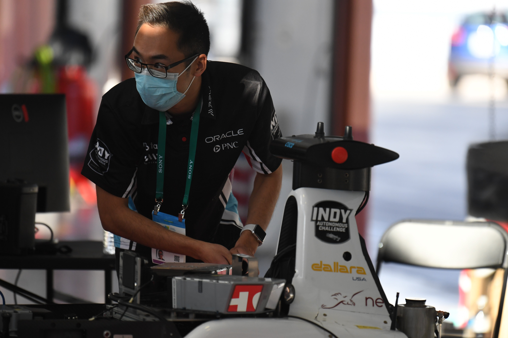
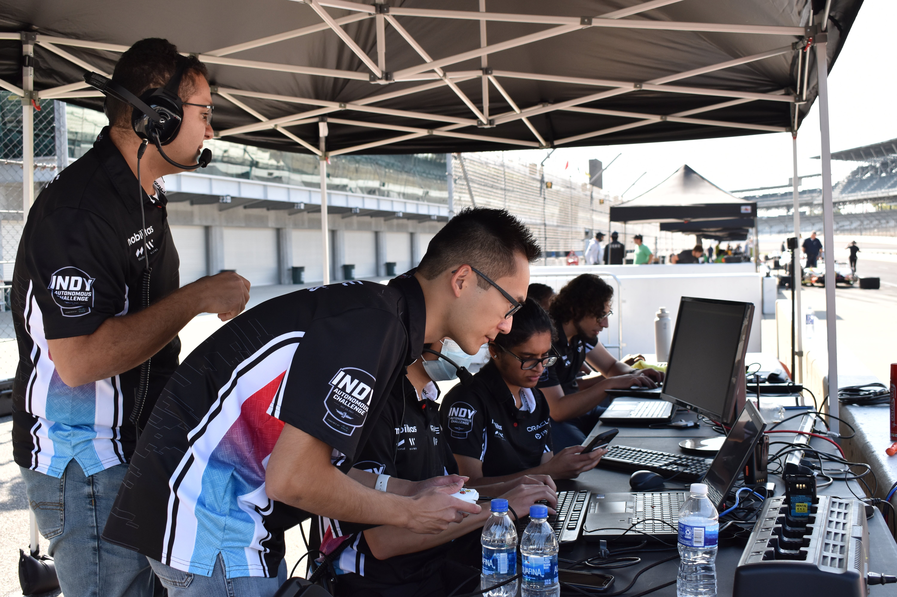
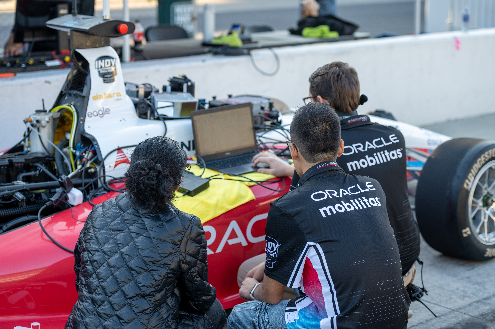
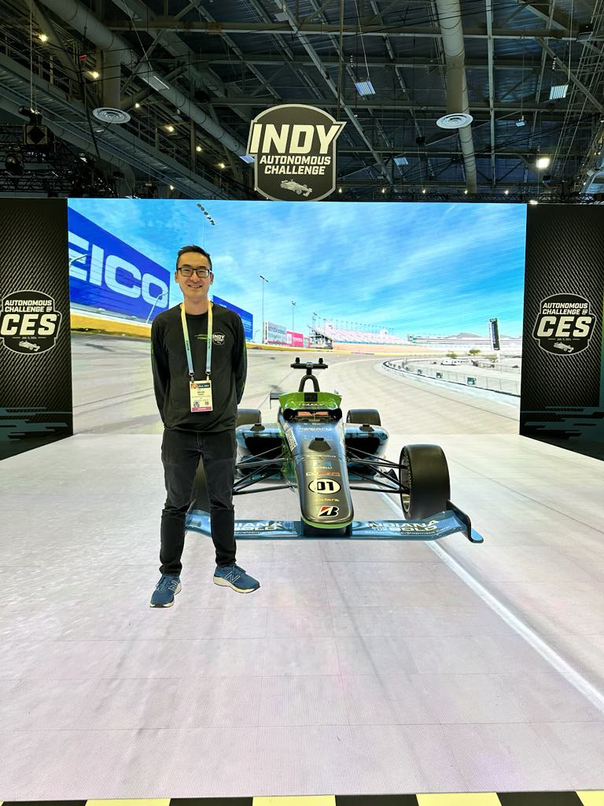

Autonomous Racing
Indy Autonomous Challenge 2021
MIT-PITT-RW is a collaboration between graduate and undergraduate students from the Massachusetts Institute of Technology (MIT), University of Pittsburgh, Rochester Institute of Technology (RIT), and the University of Waterloo. The team was formulated to program a race car to drive autonomously around the Indianapolis Motor Speedway as part of the Indy Autonomous Challenge. The team is divided into subteams focused on Perception, State Estimation, Path Planning, Controls, Vehicle Modeling, Integration, Simulation + Infrastructure, as well as Business + Operations. The race occurred on October 23, 2021 with over $1 Million USD awarded in prizes.

Select News Articles
Autonomous Challenge at CES 2022
MIT-PITT-RW was featured at the Consumer Electronics Show as part of the Autonomous Challenge @CES 2022. The event was focused on a multi-agent passing competition. The race occured on January 7, 2022 with $200,000 USD awarded in prizes.

Texas Motor Speedway 2022
A third race from the Indy Autonomous Challenge occurred on November 11, 2022 at the Texas Motor Speedway.

Autonomous Challenge at CES 2023
The Autonomous Challenge @CES 2023 occured on January 7, 2023. MIT-PITT-RW finished 4th place in the event, which was a multi-agent passing competition between cars, similar to the CES 2022 event.

Autodromo Nazionale Monza 2023
The Indy Autonomous Challenge was featured as part of the Milano Monza Motor Show (MIMO 2023) in Monza, Italy throughout June 16-18, 2023.

Autonomous Challenge at CES 2024
I was no longer able to compete in the Indy Autonomous Challenge as I had graduated the year prior and was no longer a student. However, the competition organizers invited me back as a booth presenter for the competition held at CES 2024.
